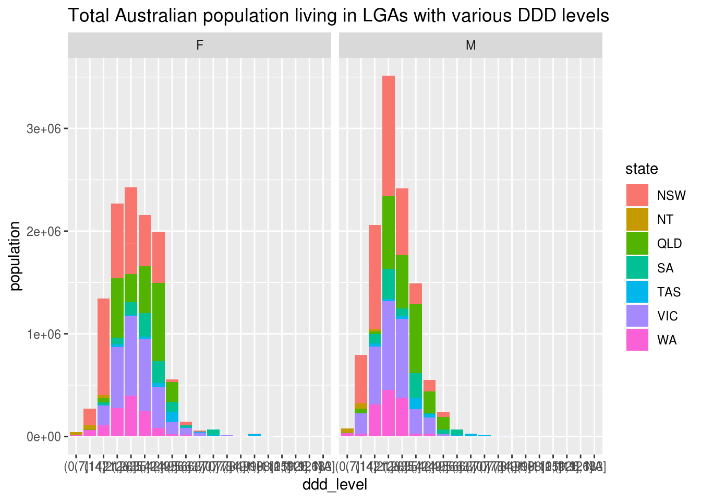

Benzo-opioid v2 analysis
Mofi Islam and Dennis Wollersheim
2018-04-30
Last updated: 2019-01-15
workflowr checks: (Click a bullet for more information)-
✖ R Markdown file: uncommitted changes
The R Markdown file has unstaged changes. To know which version of the R Markdown file created these results, you’ll want to first commit it to the Git repo. If you’re still working on the analysis, you can ignore this warning. When you’re finished, you can runwflow_publishto commit the R Markdown file and build the HTML. -
✔ Environment: empty
Great job! The global environment was empty. Objects defined in the global environment can affect the analysis in your R Markdown file in unknown ways. For reproduciblity it’s best to always run the code in an empty environment.
-
✔ Seed:
set.seed(20190107)The command
set.seed(20190107)was run prior to running the code in the R Markdown file. Setting a seed ensures that any results that rely on randomness, e.g. subsampling or permutations, are reproducible. -
✔ Session information: recorded
Great job! Recording the operating system, R version, and package versions is critical for reproducibility.
-
Great! You are using Git for version control. Tracking code development and connecting the code version to the results is critical for reproducibility. The version displayed above was the version of the Git repository at the time these results were generated.✔ Repository version: 0fdf546
Note that you need to be careful to ensure that all relevant files for the analysis have been committed to Git prior to generating the results (you can usewflow_publishorwflow_git_commit). workflowr only checks the R Markdown file, but you know if there are other scripts or data files that it depends on. Below is the status of the Git repository when the results were generated:
Note that any generated files, e.g. HTML, png, CSS, etc., are not included in this status report because it is ok for generated content to have uncommitted changes.Ignored files: Ignored: .Rhistory Ignored: .Rproj.user/ Ignored: data/cache/ Ignored: graphics/ Untracked files: Untracked: asdf Untracked: docs/figure/ Unstaged changes: Modified: analysis/exploreViolin.Rmd Modified: analysis/part1.Rmd
Expand here to see past versions:
| File | Version | Author | Date | Message |
|---|---|---|---|---|
| Rmd | 66750e9 | Dennis Wollersheim | 2019-01-11 | violinmultiplots |
| Rmd | db5d3a7 | Dennis Wollersheim | 2019-01-11 | violin |
| Rmd | 7a66d72 | Dennis Wollersheim | 2019-01-10 | over to jay |
| Rmd | 934f788 | Dennis Wollersheim | 2019-01-09 | eod |
| Rmd | 4401984 | Dennis Wollersheim | 2019-01-09 | transfer to jay |
| Rmd | 89e2da3 | Dennis Wollersheim | 2019-01-07 | initial commit; multiplots |
Methods
The data is from the PBS prescribing data. In this dataset, we have every opioid and benzodiazepine prescription for a 10% sample of the population, made in the period 2013-2016. In a single prescription, we have a date of supply, a drug type and strength, and the number of pills. Using the WHO DDD drug classification, we determine the total DDD for each prescription, and then we estimate the end day of the prescription to be the start day + totalDDD, rounded to the nearest day. This start and end data comprise the prescription period.
Variables
Independent
- LGA level variables
- SEIFA
- urbanisation
- census data - english language, 2 person household
- Person level variables
- gender
- age groups
- drug of choice
- user type
- lga
- Script level variables
- month of supply
- drug type - drug name
- benzo type
- opioid type
dependent variables
- benzo and opioid usage (scripts / ddd / number of users / ddd per user / scripts per user )
- lga level ddd





# A tibble: 528 x 5
lga n state lga_name population
<chr> <dbl> <chr> <chr> <dbl>
1 32750 10 QLD Diamantina (S) 292
2 40250 10 SA Anangu Pitjantjatjara (AC) 2733
3 59030 10 WA Westonia (S) 278
4 70420 10 NT Barkly (S) 8111
5 54970 20 WA Laverton (S) 1342
6 55880 20 WA Mount Marshall (S) 481
7 55530 40 WA Mingenew (S) 485
8 74500 40 NT Victoria-Daly (S) 3390
9 52380 60 WA Cue (S) 293
10 59250 60 WA Wiluna (S) 1255
# ... with 518 more rows# A tibble: 20 x 6
lga lga_name state rate prescriptions ddd
<chr> <chr> <chr> <dbl> <dbl> <dbl>
1 40250 Anangu Pitjantjatjara (AC) SA 366. 10 0.119
2 70420 Barkly (S) NT 123. 10 0.175
3 74500 Victoria-Daly (S) NT 1180. 40 0.457
4 35780 Northern Peninsula Area (R) QLD 3520. 90 0.917
5 73600 Roper Gulf (S) NT 1796. 130 1.00
6 71300 East Arnhem (S) NT 3308. 360 1.61
7 56620 Ngaanyatjarraku (S) WA 9554. 150 1.65
8 72330 MacDonnell (S) NT 6593. 460 1.95
9 32750 Diamantina (S) QLD 3425. 10 2.75
10 59250 Wiluna (S) WA 4781. 60 2.81
11 74660 West Arnhem (S) NT 800. 60 2.98
12 55880 Mount Marshall (S) WA 4158. 20 4.01
13 55530 Mingenew (S) WA 8247. 40 4.04
14 72200 Katherine (T) NT 8231. 910 5.14
15 50250 Ashburton (S) WA 9687. 1060 5.40
16 48640 Wudinna (DC) SA 40530. 520 5.48
17 59340 Wyndham-East Kimberley (S) WA 22804. 1970 6.11
18 30760 Blackall Tambo (R) QLD 25497. 590 6.12
19 55810 Mount Magnet (S) WA 10029. 70 6.12
20 70700 Coomalie (S) NT 33784. 450 6.23 # A tibble: 20 x 6
lga lga_name state rate prescriptions ddd
<chr> <chr> <chr> <dbl> <dbl> <dbl>
1 52030 Coorow (S) WA 71099. 770 65.9
2 55460 Merredin (S) WA 113156. 3750 66.1
3 25810 Northern Grampians (S) VIC 134607. 15850 66.7
4 27630 Yarriambiack (S) VIC 136733. 9600 66.8
5 45680 Playford (C) SA 100354. 85300 67.2
6 58400 Trayning (S) WA 134670. 470 67.9
7 55950 Mukinbudin (S) WA 93439. 470 68.9
8 52940 Dowerin (S) WA 140580. 970 71.5
9 53080 Dundas (S) WA 85593. 1010 76.8
10 62610 Glenorchy (C) TAS 113908. 51820 79.1
11 56370 Narembeen (S) WA 163164. 1320 80.4
12 41330 Coober Pedy (DC) SA 121433. 2170 80.7
13 21670 Central Goldfields (S) VIC 162837. 20550 85.8
14 58190 Tammin (S) WA 180049. 740 86.2
15 60410 Brighton (M) TAS 121197. 19160 86.2
16 11050 Boorowa (A) NSW 92723. 2370 88.6
17 54410 Kellerberrin (S) WA 135510. 1660 88.7
18 45540 Peterborough (DC) SA 166278. 2850 101.
19 36150 Quilpie (S) QLD 99796. 980 116.
20 59320 Woodanilling (S) WA 88785. 380 121. Session information
R version 3.4.4 (2018-03-15)
Platform: x86_64-pc-linux-gnu (64-bit)
Running under: Ubuntu 16.04.5 LTS
Matrix products: default
BLAS: /usr/lib/libblas/libblas.so.3.6.0
LAPACK: /usr/lib/lapack/liblapack.so.3.6.0
locale:
[1] LC_CTYPE=en_AU.UTF-8 LC_NUMERIC=C LC_TIME=en_AU.UTF-8 LC_COLLATE=en_AU.UTF-8 LC_MONETARY=en_AU.UTF-8 LC_MESSAGES=en_AU.UTF-8 LC_PAPER=en_AU.UTF-8
[8] LC_NAME=C LC_ADDRESS=C LC_TELEPHONE=C LC_MEASUREMENT=en_AU.UTF-8 LC_IDENTIFICATION=C
attached base packages:
[1] grid stats4 parallel stats graphics grDevices utils datasets methods base
other attached packages:
[1] bindrcpp_0.2.2 keyring_1.1.0 RPostgreSQL_0.6-2 DBI_1.0.0 spbabel_0.4.8 sp_1.3-1 mapview_2.4.0 tmaptools_2.0-1
[9] tmap_2.1-1 tictoc_1.0 forcats_0.2.0 dplyr_0.7.6 purrr_0.2.5 readr_1.1.1 tidyr_0.7.2 tibble_1.4.2
[17] ggplot2_3.1.0 tidyverse_1.2.1 multidplyr_0.0.0.9000 IRanges_2.4.1 S4Vectors_0.8.0 BiocGenerics_0.16.0 fuzzyjoin_0.1.4 DataCache_0.9
[25] wrapr_1.5.1 readstata13_0.9.2 lubridate_1.7.4 knitr_1.20 stringr_1.3.1 magrittr_1.5 seas_0.4-3 workflowr_1.1.1
loaded via a namespace (and not attached):
[1] colorspace_1.3-2 class_7.3-14 gdalUtils_2.0.1.14 leaflet_2.0.1 rgdal_1.3-4 rprojroot_1.2 satellite_1.0.1 base64enc_0.1-3 dichromat_2.0-0 rstudioapi_0.7
[11] fansi_0.2.3 xml2_1.2.0 codetools_0.2-15 R.methodsS3_1.7.1 mnormt_1.5-5 jsonlite_1.5 broom_0.4.3 png_0.1-7 R.oo_1.22.0 rgeos_0.3-28
[21] shiny_1.1.0 compiler_3.4.4 httr_1.3.1 backports_1.1.1 assertthat_0.2.0 lazyeval_0.2.1 cli_1.0.0 later_0.7.3 htmltools_0.3.6 tools_3.4.4
[31] gtable_0.2.0 glue_1.3.0 reshape2_1.4.3 Rcpp_1.0.0 cellranger_1.1.0 raster_2.6-7 nlme_3.1-137 iterators_1.0.10 crosstalk_1.0.0 psych_1.7.8
[41] lwgeom_0.1-4 rvest_0.3.2 mime_0.5 XML_3.98-1.15 scales_1.0.0 hms_0.4.2 promises_1.0.1 RColorBrewer_1.1-2 yaml_2.1.15 stringi_1.2.4
[51] foreach_1.4.4 e1071_1.7-0 spData_0.2.9.3 rlang_0.3.0.1 pkgconfig_2.0.2 evaluate_0.10.1 lattice_0.20-35 bindr_0.1.1 sf_0.6-3 labeling_0.3
[61] htmlwidgets_1.2 tidyselect_0.2.4 plyr_1.8.4 R6_2.3.0 pillar_1.3.0 haven_1.1.0 whisker_0.3-2 foreign_0.8-70 withr_2.1.2 units_0.6-0
[71] modelr_0.1.1 crayon_1.3.4 utf8_1.1.4 KernSmooth_2.23-15 rmarkdown_1.8 readxl_1.0.0 git2r_0.22.1 digest_0.6.18 classInt_0.2-3 webshot_0.5.0
[81] xtable_1.8-2 httpuv_1.4.5 R.utils_2.6.0 munsell_0.5.0 viridisLite_0.3.0 This reproducible R Markdown analysis was created with workflowr 1.1.1